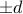
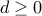

On Optimal Signal Sets for Digital Communications with Finite Precision and Amplitude Constraints
IEEE Transactions on Communications, 39(2):249-255, February 1991. Conference paper appeared in Proceedings of the IEEE Globecom Conference, Tokyo, pp.248-253, November 1987.
The maximum data rate that can be reliably communicated given a linear,
time-invariant, dispersive channel, a receiver that samples the channel output
to within an accuracy of , where , and a transmitter with an output
amplitude constraint is evaluated. For any dispersive channel the maximum rate
depends on  and is finite. The transmitted waveforms must be designed so that
two channel outputs associated with two distinct transmitted signals are
separated in amplitude at a particular time by . It is shown that given any
channel impulse response with rational Laplace transform, there exists an
optimal set of inputs that are everywhere where
and is finite. The transmitted waveforms must be designed so that
two channel outputs associated with two distinct transmitted signals are
separated in amplitude at a particular time by . It is shown that given any
channel impulse response with rational Laplace transform, there exists an
optimal set of inputs that are everywhere where  is the maximum
allowable amplitude. Furthermore, in any finite time interval, each input
changes sign a finite number of times. If the channel impulse response is a
single decaying exponential, it is shown that simple binary signaling, in which
or , depending on the current message bit, is transmitted during each
symbol interval, maximizes the data rate.
is the maximum
allowable amplitude. Furthermore, in any finite time interval, each input
changes sign a finite number of times. If the channel impulse response is a
single decaying exponential, it is shown that simple binary signaling, in which
or , depending on the current message bit, is transmitted during each
symbol interval, maximizes the data rate.